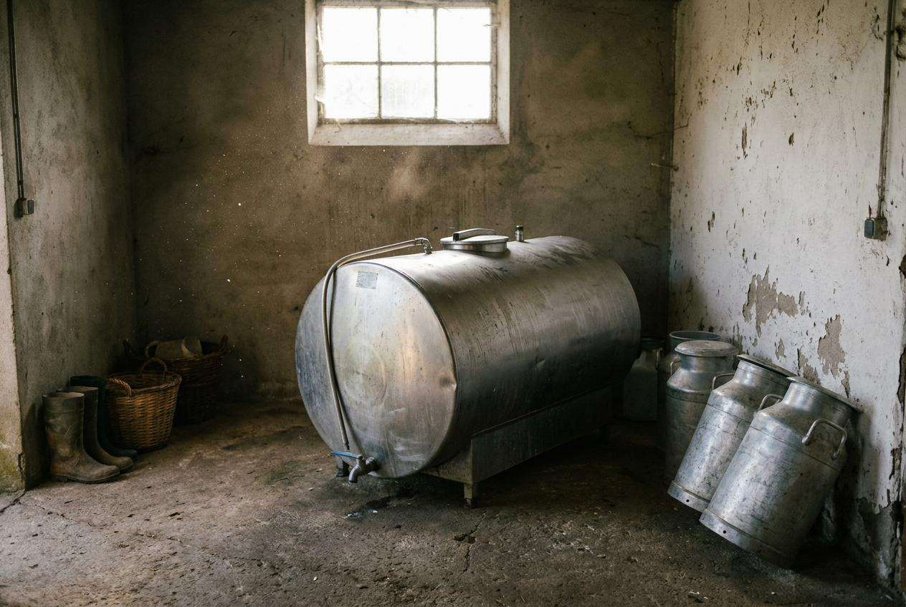
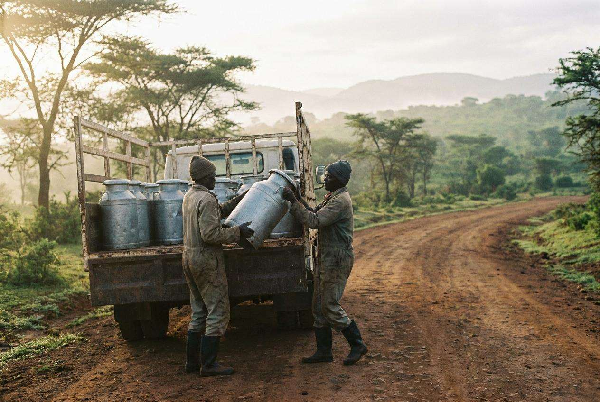

About us
Our story
Ereteti Dairy Sacco has been collecting milk on the Ngong road since 1998.
Around eight hundred farmers deliver milk twice a day to our collection centres. The sacco weighs the milk, records it in a paper ledger, and pays once a month.

